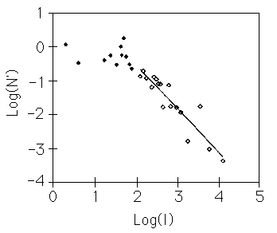
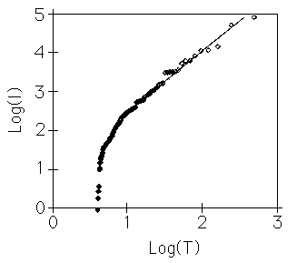

D. Roberts and D. Turcotte found fractal scalings in the frequency-size statistics of wars. The obvious measure of intensity of a war is the number of battle deaths. Indeed, this measurement was used by Richardson. Because he studied wars over a period of 130 years, the absolute number of battle deaths is not an appropriate measure. The ratio of battle deaths to world population would be better. World population has not been reliably known for very long, so the ratio of battle deaths to the population of Europe (in millions) is taken as a measure of intensity.
One approach to look for power law behavior in the intensity of wars is to compute the cumulative distribution, N(I) denotes the number of wars of intensity <= I, and then find the slope of the graph of N(I) vs I. (That is, look at the graph of the derivative N'(I), where this is estimated by the average of the slopes of the lines connecting the five nearest data points to (I, N(I)).) Plotting Log(N') vs Log(I), power law behavior is revealed if the data points fall close to a straight line. In the graph below this method is applied to 119 wars from the time period 1495 to 1973. The data fit well for larger wars (open dots, I >= 100), and extends reasonably well down to wars with I > 30. The slope of the best fit line is -1.27. Departures for smaller wars may result from incomplete data, or may point out a change in the dominant influences for smaller wars.
|  |
Next, the graph below shows another approach: scaling relations between
the intensity of a war and its "return period" T. We take the return period T0
of the largest war to be the length of the data set:
|  |
What are we to make of this? Roberts and Turcotte used the forest-fire model of Bak's self-organized criticality to suggest a reason for this observed scalings. In the forest fire model, a spark may ignite a cluster of dry trees, which may in turn ignite others, and so on. The hierarchical clustering of trees in a statistically self-similar fashion is responsible for the power law scaling in forest fires. In war, the role of dry trees is played by metastable countries, countries for which a small push may or may not push them into war. Complex interactions of countries can lead to the spread and clustering of metastability, so perhaps the forest fire model is a plausible candidate for the spread of wars.
Does the fractal distribution of wars suggest a course of action?